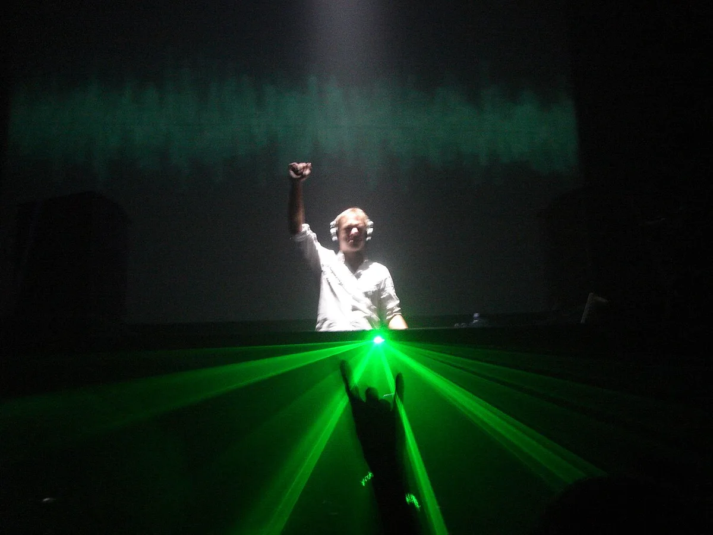
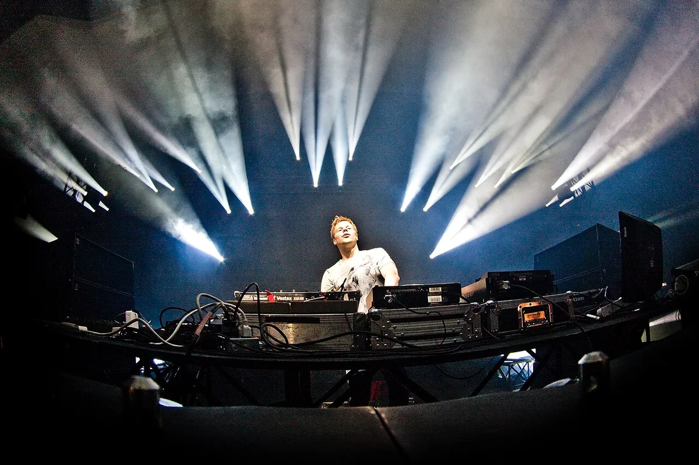
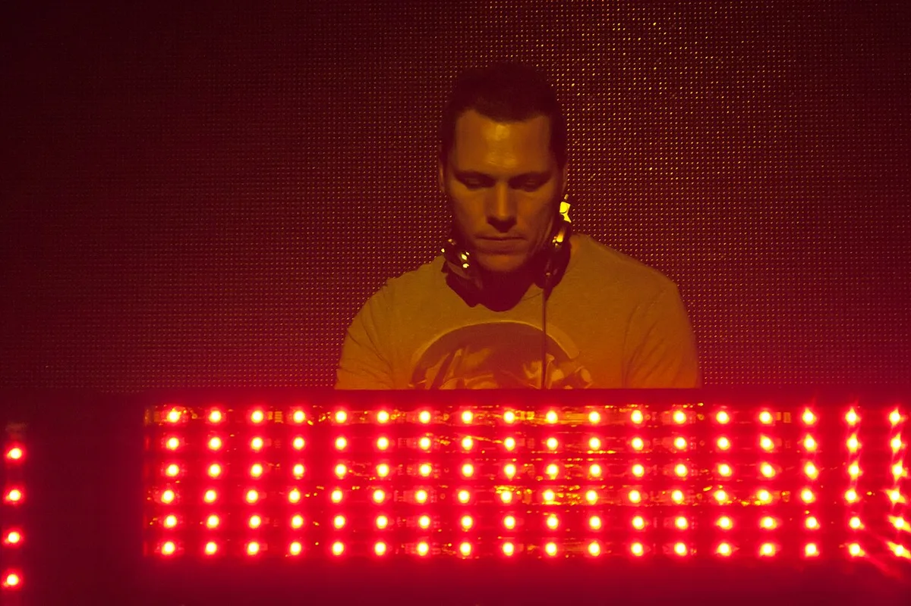

Trance
Best Trance Tracks of All Time: 12 Records to Hear
Twelve trance records from 1993 to 2012, with release years, UK chart peaks and a player for each.
A list of records, not a history of the genre.
The list is in the order the records came out, not a countdown. Trance has no official chart of its own, so no single ranking settles which record is best. What can be checked is what charted, what sold, and what listeners of the radio show A State of Trance vote for.
This is a list of records. The trance guide covers a different question: what trance is, where it started in Frankfurt, who the artists are and how the music splits into styles. For the history, read that first.
How these trance tracks were chosen.
A record had to have charted in the UK or appear in the A State of Trance Top 1000, the fan vote run by the radio show. The UK peaks come from Official Charts. The vote has run twice: in January 2021, when Armin van Buuren's Shivers came first, and in April 2024, when the RAMsterdam remix by RAM and Jorn van Deynhoven did. Tiësto's Adagio for Strings is second on both lists and Silence in the Tiësto remix is fourth; Shivers and Communication Part 3 are in the top five of both.
The vote reflects one show's listeners, so some records here are in because they charted, not because they won a vote.

Before the charts: 1993 to 1995.
Café del Mar by Energy 52 came out in 1993. The Three 'n One remix entered the UK chart in March 1997. Paul van Dyk's For an Angel has the same double life: he released it in 1994 on the MFS label as his debut track, and in 1998 the E-Werk Remix, named after the Berlin club where he was resident, topped the UK dance chart and peaked at number 28 on the main singles chart.
Robert Miles's Children came out in November 1995 and reached number 2 in the UK, spending ten weeks in the top ten. Oasis and Take That kept it off number 1, and it was the eighth best-selling single of 1996 in Britain.
The chart years: the best trance tunes of 1998 and 1999.

ATB's 9 PM (Till I Come) was his debut single, released by Kontor Records on 26 October 1998. Its UK release on Ministry of Sound went to number 1 in July 1999. Chicane's Saltwater came out on 24 May 1999 and peaked at number 6. It adapts Clannad's Theme from Harry's Game, from 1982, with new lyrics recorded by Moya Brennan, who sang with Clannad.
Ferry Corsten's Out of the Blue, as System F, circulated on a white label among UK DJs in 1998, and Pete Tong made it his Essential New Tune that November. It was released in March 1999, on Tsunami in the Netherlands and on Essential Recordings in the UK, where it reached number 14. Delerium's Silence, with Sarah McLachlan, came out in May 1999 and peaked at number 73. The remixes released in October 2000, by Tiësto and Airscape among others, took it to number 3 and to the top of the UK dance and independent charts. The player below is the Tiësto remix.
The superstar DJ years: 2004 to 2012.

From 2004 the UK peaks get lower and the fan-vote places higher. OceanLab's Satellite, Above & Beyond's vocal project, reached number 19 in May 2004 and number 3 on the dance singles chart. Tiësto's Adagio for Strings is his trance arrangement of the piece by Samuel Barber. It first charted in the UK on 23 April 2005, peaking at number 37 on the main chart and number 2 on the dance chart, and it is second in both fan votes.
Armin van Buuren's Shivers, with Susana, was released on Armind on 14 February 2005, ahead of the album of the same name in August. The single, billed Shivers/Serenity in the UK, peaked at number 72, a long way below its place in the fan vote. Communication Part 3 followed on 2 April 2007 on Armind. Gareth Emery's Concrete Angel, with Christina Novelli, who co-wrote it, came out on Garuda in February 2012 and is ninth on the 2021 list.
Which is the best trance track ever?
Three measures give three answers. By the UK chart, the best trance track ever is ATB's 9 PM (Till I Come), the only record here that reached number 1. By sales in a single year, it is Robert Miles's Children, eighth in 1996. By the fan vote, it is Shivers in 2021 and the RAMsterdam remix in 2024, with Tiësto's Adagio for Strings second both times.
So the best trance track of all time depends on who is counting. For a first listen to the best ever trance songs, my pick is Silence in the Tiësto remix: the remixes reached number 3 in the UK, it is fourth in both fan votes, and it works for someone who has never heard trance.
| Record | Year | Peak, UK Official Singles Chart |
|---|---|---|
| ATB, 9 PM (Till I Come) | 1998 (UK release, 1999) | 1 |
| Robert Miles, Children | 1995 | 2 |
| Delerium feat. Sarah McLachlan, Silence | 1999 (remixes, 2000) | 3 |
| Chicane, Saltwater | 1999 | 6 |
| System F, Out of the Blue | 1999 | 14 |
| OceanLab, Satellite | 2004 | 19 |
| Paul van Dyk, For an Angel (E-Werk Remix) | 1994 (remix, 1998) | 28 |
| Tiësto, Adagio for Strings | 2005 | 37 |
| Armin van Buuren, Shivers/Serenity | 2005 | 72 |
Source: Official Charts, checked 6 October 2026. Café del Mar charted in 1997 but is left out because the sources I found disagree on its peak. Communication Part 3 and Concrete Angel are left out because I did not find a UK singles peak for them.
A break from the list: two tracks of mine.
Neither is a trance record, and neither belongs to the list above. They are here because this site is made by someone who makes music.
Best trance tracks FAQ.
What is the best trance song of all time?
There is no single measured answer. By UK chart peak the highest is ATB's 9 PM (Till I Come), which reached number 1 in 1999. In the A State of Trance fan vote, Tiësto's Adagio for Strings is second on both the 2021 and the 2024 list.
What is the best trance track of all time for a first listen?
My pick is Delerium feat. Sarah McLachlan, Silence, in Tiësto's In Search of Sunrise Remix. The October 2000 remixes reached number 3 in the UK, and this one is fourth in both fan votes.
What are the best ever trance songs from the 1990s?
From this list: Energy 52's Café del Mar, Paul van Dyk's For an Angel, Robert Miles's Children, ATB's 9 PM (Till I Come), Chicane's Saltwater, System F's Out of the Blue and Delerium's Silence.
What are the best trance tunes that charted in the UK?
Ten of the twelve are confirmed UK chart entries. The table above gives nine peaks, from 9 PM at number 1 to Shivers/Serenity at number 72.
How is this different from the trance guide?
This page ranks and plays records. The trance guide explains what trance is, where it began and who the artists are.
Sources.
- Official Charts, song chart histories for 9PM (Till I Come), Saltwater, Children, Silence, Café del Mar, For an Angel, Adagio for Strings, Satellite, Shivers/Serenity and Out of the Blue, read 6 October 2026.
- A State of Trance all-time Top 1000: the 2021 results and the 2024 results.
- DJ Mag, How Paul van Dyk's For An Angel changed trance forever, for the 1994 MFS release and the E-Werk Remix.
- Release dates for 9 PM (Till I Come), Saltwater, Out of the Blue, Shivers, Communication Part 3 and Concrete Angel come from discography and reference pages, not from a label page.
- YouTube oEmbed checks for every embedded player, 6 October 2026.
- Photographs from Wikimedia Commons: Davide Pasca (CC BY 2.0), Celwin Frenzen (CC BY 3.0), Vyacheslav Argenberg (CC BY 4.0).
Continue reading
Read next.
 Music history~9 min read
Music history~9 min readWhat Is Trance Music? Origins, Artists and Sound
A build, a breakdown and a drop, born in Frankfurt's clubs. Who built it, how Armin van Buuren and Tiësto took it to festival mainstages, and how psytrance split off.
Read article → Music history~8 min read
Music history~8 min readWhat Is Hardstyle? History, Sound, Artists and Subgenres
Reverse bass, distorted pitched kicks, the Dutch festival circuit and the split between euphoric and raw hardstyle.
Read article → Music history~27 min read
Music history~27 min readThe Evolution of UK Electronic Music
Ten sounds that travelled from regional underground scenes into global culture.
Read article → Music history~11 min read
Music history~11 min readGerman Electronic Music History: From Kraftwerk to Techno
Cologne studios, Düsseldorf electronic pop, Frankfurt trance and the Detroit-Berlin alliance.
Read article →